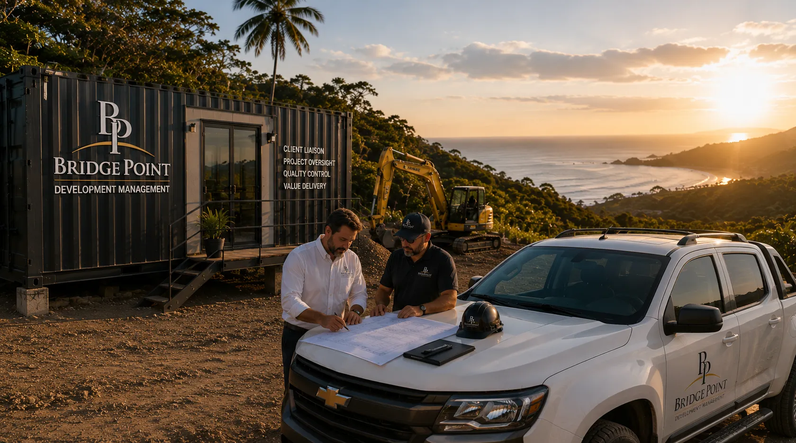
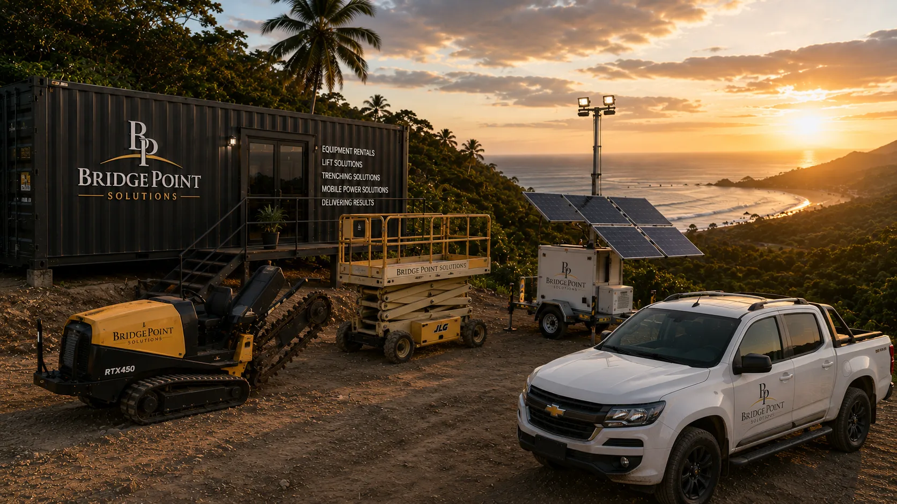
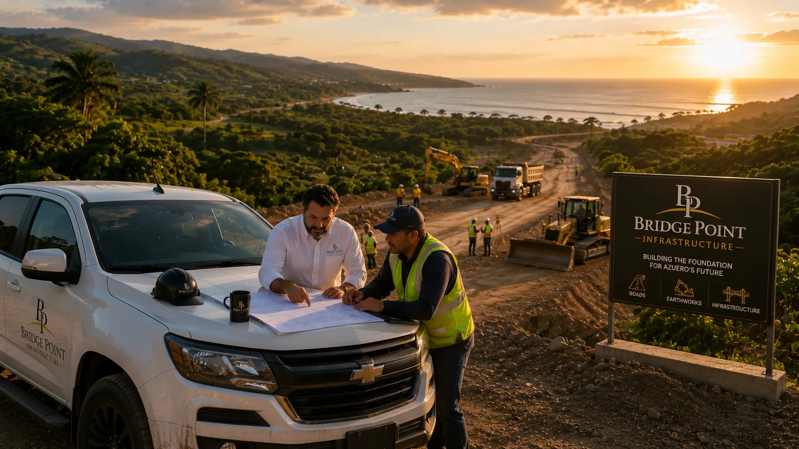
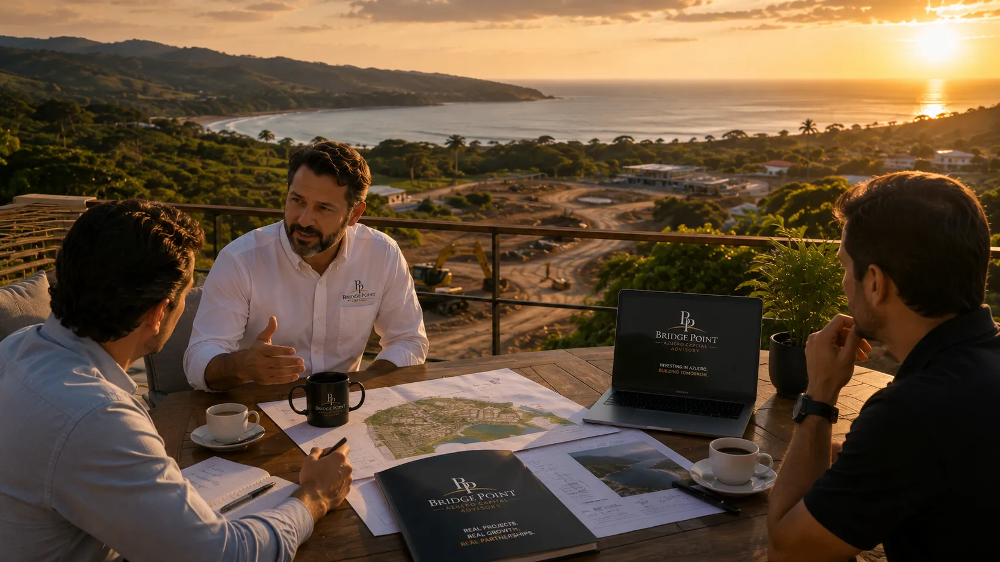

BridgePoint Strategic Group reúne cinco divisiones conectadas, diseñadas para apoyar a los clientes desde la visión y planificación hasta la ejecución, visibilidad y crecimiento a largo plazo.
BridgePoint creció alrededor de las necesidades de clientes reales y proyectos reales. Algunos requerían supervisión de proyectos. Otros necesitaban apoyo de infraestructura, branding más fuerte, soluciones de equipos o guía financiera.
En lugar de tratar estas necesidades como desafíos separados, BridgePoint creó un ecosistema coordinado donde cada división fortalece a la siguiente.
Los clientes pueden comenzar con una sola conversación y acceder a la experiencia, las relaciones y el apoyo adecuados en la etapa correcta de su proyecto.
Cada división tiene su propio propósito, pero juntas forman un ecosistema conectado, diseñado para ayudar a los clientes a avanzar de la visión a la ejecución con confianza.
Branding premium, sitios web, presentaciones y ecosistemas digitales diseñados para posicionar negocios para crecer.
Explorar División →
Enlace con el cliente, supervisión de proyectos, control de calidad y coordinación desde el concepto hasta la entrega.
Explorar División →
Equipos, soluciones de alquiler, apoyo de energía móvil y recursos prácticos de campo para mantener proyectos en marcha.
Explorar División →
Caminos, drenajes, movimiento de tierra y soluciones de infraestructura que apoyan el desarrollo y el crecimiento comunitario.
Explorar División →
Guía financiera, apoyo de inversión y asesoría estratégica conectada con proyectos y oportunidades reales.
Explorar División →El branding estratégico ayuda a los negocios a comunicarse con claridad. La gestión de desarrollo mantiene los proyectos coordinados. La infraestructura crea acceso y oportunidad. Las soluciones de equipos mantienen el trabajo avanzando. El apoyo de inversión ayuda a acercar las ideas a la realidad.
Individualmente, cada división responde a una necesidad específica. Juntas, le dan a BridgePoint la capacidad de apoyar a los clientes en múltiples etapas de crecimiento y desarrollo.
Esta filosofía conecta cada división y guía la forma en que BridgePoint sirve a sus clientes.
Ya sea que su necesidad comience con branding, supervisión de proyectos, infraestructura, apoyo de equipos o guía financiera, BridgePoint ayuda a conectar la solución adecuada.